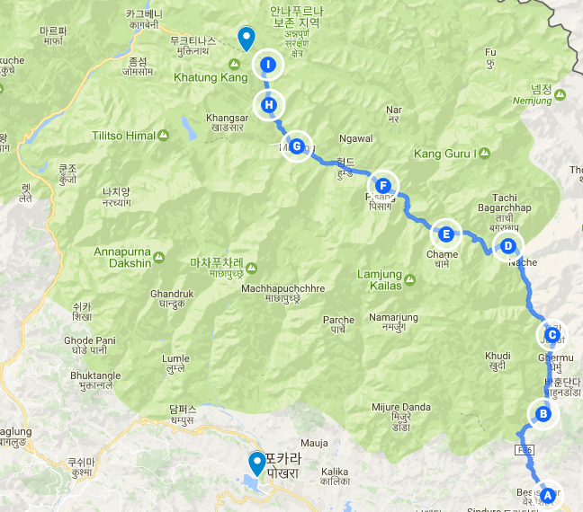

본격적인 고산
2017년 04월 20일
여행 D+17, 안나푸르나 D+9
오늘 이동한 경로 (H) -> (I) (총 10km)
Yak khalka(4050) -> Thorong Phedi(4450) -> High Camp(4850) -> top hill(4950) -> Thorong Phedi(4450)

새벽에 깻는데 머리가 꽤 띵했다. 아침에 일어나도 마찬가지. 한국에 있을때도 가끔씩 일어나면 두통이 있을때가 있었는데 수면시 충분한 산소를 섭취하지 못해서 그런것 같다. 아침을 먹은 뒤에 나아지길 기대 했다. 식당에서 설탕을 한 두 스푼 먹었더니 조금 좋아진것 같았다. 그리고 아침으로 야크 스테이크를 먹었는데 많이 좋아졌다. 한국에서도 종종 이랬는데, 이건 고산증상은 아니고 수면 무호흡 증상에 가까운것 같다.
8시에 출발했다. Yak khalka 에서 Thorong phedi 까지 이동해야한다. 이제부터 본격적으로 4000m 지대로 등반하기 때문에 힘든 구간이 시작된다. 처음부터 패트릭과 타쿠어를 놓쳤다. 그들은 정말 빨리 올라간다. 오늘 이동거리는 높이가 높고 짧아서 일찍 도착하게 되기 때문에 천천히 이동했다. 빨리 올라갈 필요가 없다. 천천히 이 안나푸르나를 즐기면서 올라가면된다. 목적지에 조금 늦게 도착하더라도 상관없다. 어차피 일찍 도착해서 할것도 없다.
혼자 가는 길에 L 선생님을 또 만났다. 이분은 정말 시인같다. 모든 경치를 보고 탄성을 지르신다. 심지어 지나가다가 다리를 만났는데 거기서도 멋지다고 탄성을 지르셨다. 내가 보기엔 그냥 다리같은데 말이다. 나도 이분처럼 모든것을 새롭고 멋지게 보고 싶었다
이분과 걸으면서 이곳에 있던 풍경들을 다르게 보려고 노렸했다. 강을 가로질러 놓여있는 다리, 높히 솟아있는 절벽, 그 절벽에서 돌이 굴러 떨어지는 소리. 구름 속을 날라다니는 매, 멀리 보이는 산양, 뒤를 돌아봤을때 보였던 설산, 정말 파란 하늘과 대비되는 구름. 매시간 해의 고도에 따라 달라지는 색온도와 그에 비친 설산의 색감. 모든것들이 아름다웠다.
낙석이 떨어져 위험한 상황을 경험
한참을 아무생각 없이 걷고 있는데 갑자기 위에서 돌들이 굴러떨어졌다. 나는 위험을 감지하고 즉히 몸을 웅크렸다. 갑자기 심장이 쫄깃했다. 다행이 그 구간에 낮은 벽이 있어서 그 아래로 숨어서 돌을 피할 수 있었다. 뒷편에는 폴란드 노 부부가 나를 지켜보고 있었는데 계속 그들이 계속 숙이고 있으라고 말해준다. 그뒤 상황이 안정되어 다시 길을 갈 수 있었다.
그러다가 또 돌이 굴러 떨어졌다. 이번에도 몸을 웅크려 피했지만 이번에는 머리에 돌을 한대 맞았다. 다행이 작은 돌을 맞았는지 툭소리만 들리고 전혀 아프지 않았다. 푹신한 비니랑 챙이 달린 모자 두개를 쓰고 있어서 그랬나보다. 딱봐도 왼편 언덕에서 돌이 잘 굴러떨어지게 생긴 길이다.
돌을 한방 맞았던 위험한 상황이었지만 나는 너무 재미있었다. 언제 또 히말라야의 돌을 맞아보나?! 그리고 어제 나는 안나푸르나의 허락을 받은 경험을 했다. 그것때문에 막연히 안전할것이란 믿음이 있었다. 나중에 숙소에 돌아가서 이얘기를 아무사람에게 붙잡고 떠들었다. 그들은 걱정하는 눈으로 나를 봤지만 난 신나서 떠들었다. 나에게는 엄청나게 훌룽한 경험이었다. 돌이 계속 굴러떨어졌던 구간 아래 낙석을 피할수 있는 벽?이있어 위험을 피했다.
하이캠프 까지 올라가보기로함.
오늘 목적지 쏘롱 페디(4450m)에 도착했다. 산소가 부족해서 그런지 엄청 힘들고 나른하다. 쇼파에 앉아서 쉬었는데 잠이온다. 오늘도 고산에 적응하기 위해서 약간 더 높은곳에 올라갔다가 내려오기로 했는데 귀찮아진다. 이대로는 안되겠다가 싶어 힘을내서 올라가보기로 햇다.
오늘은 패트릭과 같은 방을 공유하게 되었다. 그런데 패트릭이 문잠그고 먼저 올라가버렸다. 나는 후리스랑 스틱, 무릎보호대를 착용하고 올라가려고 했는데 그게 모두 방안에 있었다. 어쩔수 없이, 그냥 올라가기로 했다. 올라가는길이 정말 가파르고 힘들다. 산소 섭취를 위해 숨을 엄청나게 가쁘게 쉬었다.
우여곡절끝에 약 한시간 반걸려 올라가게 되었다. 신기하게도 밑에서 쉴때보다 오히려 위에 올라오니 훨씬 좋아졌다. 고산병은 결국 산소섭취가 부족해서 발생하는것인데, 등산을 심장박동이 빨라지고 숨을 더 거칠게 내쉬기 때문에 그런것 같다. 편하게 쉴때는 호흡이 느려지니 산소섭취에 더 불리하다. 그래서 이곳 고산에서는 절대 낮잠을 자면 안된다. 잠을 잘때 호흡이 느려지기 때문이다.
하이캠프에 올라왔다가 100미터 언덕에 한번더 올라가보기로 했다. 결국 오늘 4950m 고지까지 올라왔다. 아직 아무 문제 없었다. 내일 쏘롱라패스를 고산병 문제없이 넘을 수 있을것 같았다.
롯지에 다시 돌아왔다 . 카운터에 백인여자가 있었다. 신기해서 물어봤는데 물어봤는데 여기서 4년을 살았다고한다. 도데체 이 높은 곳에서 고향도 아닌곳에 왜 4년이나 살고 있는걸까?? 이곳 네팔에는 이렇게 이해할 수 없는 삶을 가진 사람들이 많다. 흥미롭다.
드디어 내일 최고 높이인 쏘롱라 패스를 넘는다. 새벽 4시에 출발해야한다. 이번 트레킹 중 가장 어려운 코스가 될 것이다. 그래도 어제 약간이라도 연습했으니 도움일 될것이라는 기대를 가지고 취침했다.